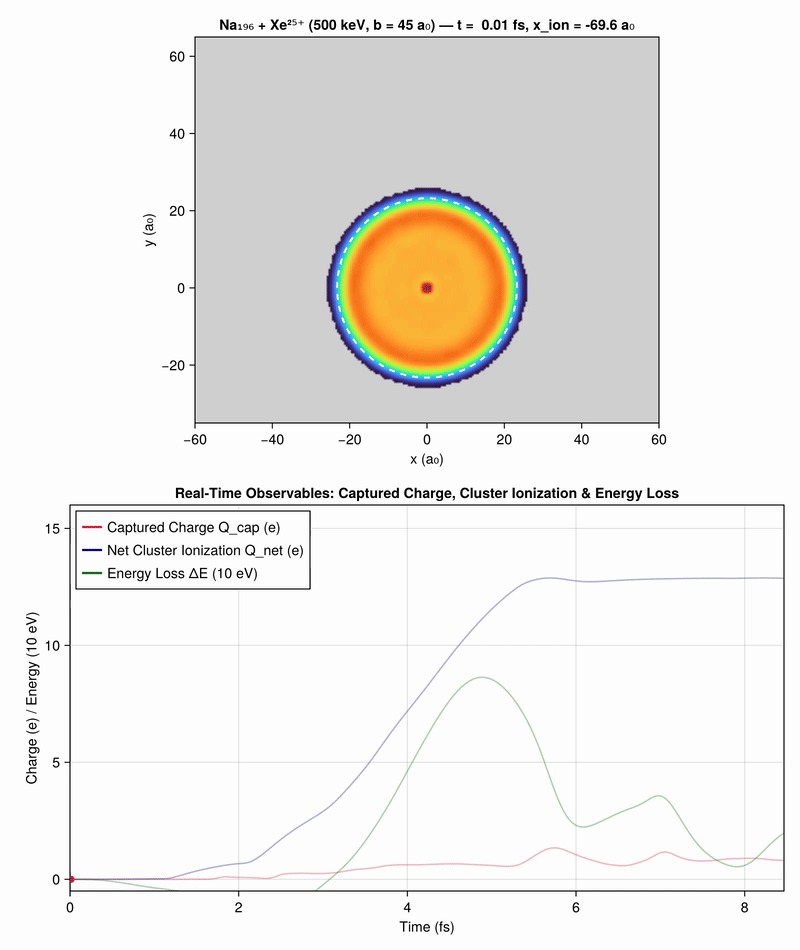
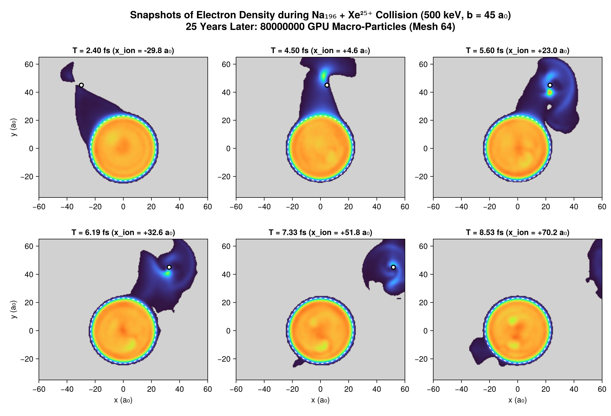
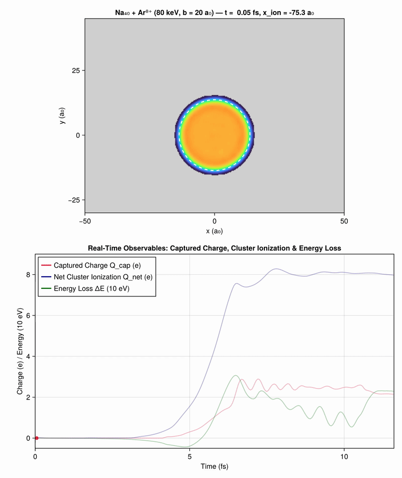
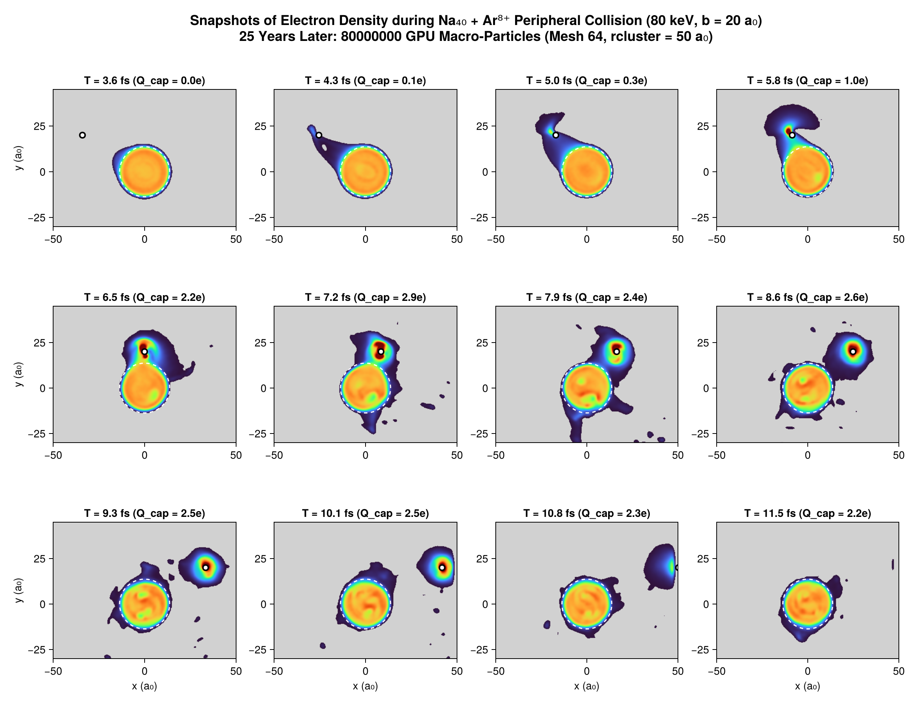
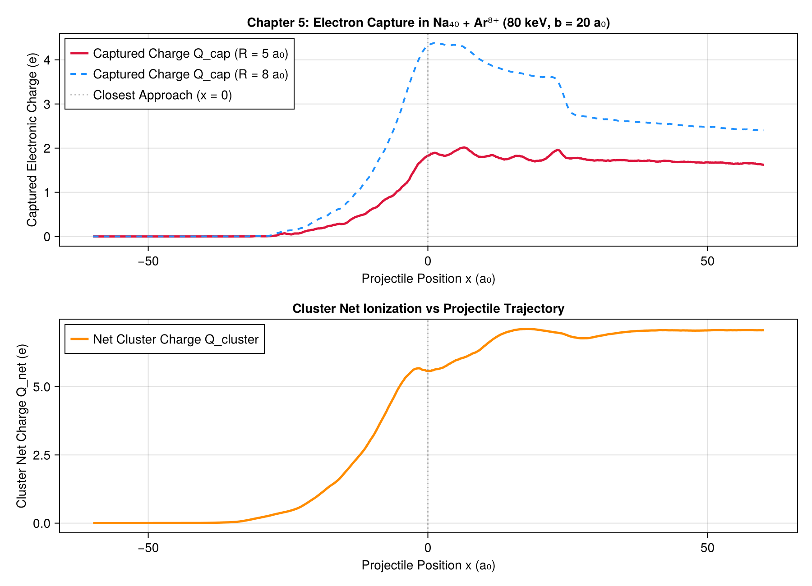

Chapter 5: Peripheral Collisions with Highly Charged Ions
This chapter details the physical phenomenology, modeling, and simulation of peripheral collisions between sodium clusters and multiply charged ions ($\text{Xe}^{25+}$, $\text{Ar}^{8+}$), as presented in Chapter 4 of the 1998 thesis and the contemporary Springer 1997 publication.
1. Physical Motivation: The Rayleigh Critical Charge
A charged metallic cluster becomes unstable when electrostatic Coulomb repulsion overcomes the cluster's cohesive surface energy. For a macroscopic conducting droplet, Lord Rayleigh calculated the classical critical charge:
\[Q_c(N) \propto N^{1/2}\]
Determining the critical charge of cold, microscopic metallic clusters provides insight into the transition between microscopic quantum mechanics and macroscopic electrostatics.
To produce highly charged, weakly excited clusters without fragmenting them through violent frontal collisions, experiments deploy peripheral collisions ($b > R_{\text{cluster}}$) using highly charged heavy ions (e.g. $\text{Xe}^{25+}$, $\text{Ar}^{8+}$).
graph LR
subgraph Collision Geometry
I["Incoming Multicharged Ion (v_P, impact parameter b)"] -->|"Coulomb Saddle Dip"| P["Closest Approach (x = 0)"]
P -->|"Exit with Bound Electrons"| D["Outgoing Ion (Hollow Atom State)"]
end
subgraph Cluster Response (Na_N)
C["Valence Electron Cloud"] -->|"Resonant Tunneling / Spillover"| E["Electron Bridge Formation"]
E -->|"Capture"| D
E -->|"Continuum Emission"| F["Multi-Ionization Q_net"]
C -->|"Coherent Dipole Kick"| G["Surface Plasmon Oscillation"]
end2. Xenon Peripheral Collision Movie: $\text{Na}_{196} + \text{Xe}^{25+}$ ($500\text{ keV}$, $b = 45\text{ a}_0$)
In the Springer 1997 study (Dynamics of clusters in collision with multicharged ions), a high-energy multicharged Xenon ion ($\text{Xe}^{25+}$, $E = 500\text{ keV}$, velocity $v_P = 0.40\text{ a.u.}$) grazes a large sodium cluster $\text{Na}_{196}$ ($R_{\text{cluster}} \approx 22.8\text{ a}_0$) at an impact parameter $b = 45.0\text{ a}_0$.
25 ans plus tard : Simulation ultra-convergée à 80 millions de macro-particules
Grâce à l'accélérateur GPU Metal et aux 10,4 Go de mémoire unifiée sur Apple Silicon, la simulation est portée à 80 millions de macro-particules (contre 400 000 en 1998 et 8 millions à l'étape intermédiaire) :

(Vidéo MP4 haute définition disponible à assets/film_xenon_80M.mp4)
Planche chronologique 6 panneaux (reproduction ultra-résolue de Springer 1997 xenon40.ps)
La figure ci-dessous reproduit la séquence historique aux 6 instants clés ($t = 2.40, 4.50, 5.60, 6.19, 7.33, 8.53\text{ fs}$) avec un niveau de résolution continu sans précédent :

(L'étape intermédiaire à 8 millions de particules reste archivée dans assets/xenon_snapshots.png et assets/film_xenon.gif)
{kind=link}
{kind=link}
Principaux phénomènes physiques :
- Formation du pont électronique ($t \approx 2.5 - 3.8\text{ fs}$): Le champ coulombien intense abaisse la barrière de potentiel sous le niveau de Fermi de l'agrégat, extrayant un bras continu d'électrons vers le projectile.
- Capture en atome creux (Hollow Atom) ($t \approx 3.8 - 5.0\text{ fs}$): Les électrons se stabilisent en orbites de Rydberg autour de l'ion rapide ($Q_{\text{cap}} \approx 0.8 - 1.3\,e$).
- Multi-ionisation et plasmon dipolaire ($t \ge 6.0\text{ fs}$): L'agrégat perd $\approx 13$ électrons ($Q_{\text{net}} = +12.87\,e$), laissant un agrégat froid fortement chargé $\text{Na}_{196}^{13+}$ en oscillation plasmonique dipolaire.
3. Argon Reference Collision: $\text{Na}_{40} + \text{Ar}^{8+}$ ($80\text{ keV}$, $b = 20\text{ a}_0$)
La collision périphérique de référence étudiée dans le Chapitre 4 de la thèse de 1998 est $\text{Na}_{40} + \text{Ar}^{8+}$ :
- Cible : agrégat neutre $\text{Na}_{40}$ ($r_{\text{jel}} = 13.68\text{ a}_0$).
- Projectile : ion $\text{Ar}^{8+}$ ($M \approx 73\,446\text{ u.a.}$, $E = 80\text{ keV}$, vitesse $v_P = 0.28\text{ u.a.}$).
- Paramètre d'impact : $b = 20.0\text{ a}_0$ ($b / r_{\text{jel}} \approx 1.5$).
- Pas de temps : $\Delta t = 0.5\text{ u.a.}$ ($\approx 0.012\text{ fs}$).
25 ans plus tard : Simulation ultra-convergée à 80 millions de macro-particules
La dynamique complète sur 960 pas de temps ($11.6\text{ fs}$) a été calculée avec 80 millions de macro-particules :

Planche chronologique 12 panneaux (reproduction ultra-résolue de la Fig. 4.1 / Fsnap1.ps de la thèse)
Les 12 instantanés ci-dessous suivent la déformation de la densité électronique de $\text{Na}_{40}$ aux instants historiques exacts de $T = 3.6\text{ fs}$ à $11.5\text{ fs}$ :

(L'étape intermédiaire à 8 millions de particules reste archivée dans assets/argon_snapshots.png et assets/film_argon.gif)
{kind=link}
{kind=link}
Évolution des charges et observables :

Main Observables:
- Captured electronic charge $Q_{\text{cap}}(t)$: Measured via
enclosed_chargewithin a sphere of radius $R = 5\text{ a}_0$ or $8\text{ a}_0$ around the ion. - Cluster Net Ionization $Q_{\text{cluster}}(t)$: Deficit of electrons within the cluster volume, leaving the cluster in a net charged state $\text{Na}_{40}^{Q+}$ ($Q_{\text{final}} \approx +6.5$).
- Cluster Excitation Energy $E_{\text{exc}}$: Residual electronic internal energy after the projectile exits, dominated by the dipole surface plasmon mode.
4. Comparison with Over-the-Barrier (OBM / DOBM) and Quantum Models
The thesis benchmarks the semi-classical Vlasov simulations against:
- Classical Over-The-Barrier Model (OBM): predicts electron transfer when the Coulomb saddle point between cluster and ion drops below the Fermi level $\epsilon_F$.
- Dynamic Over-The-Barrier Model (DOBM): accounts for the finite velocity of the projectile and dynamic barrier deformation.
- Quantum TDLDA calculations (K. Yabana): confirms that the semi-classical phase-space distribution $f(\vec{r}, \vec{p}, t)$ accurately captures multi-electron transfer rates without spurious quantum suppression.